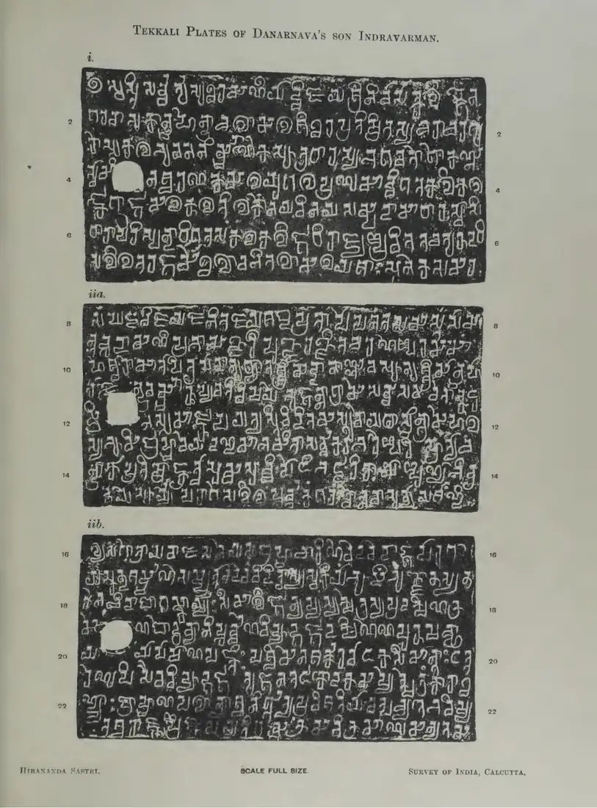
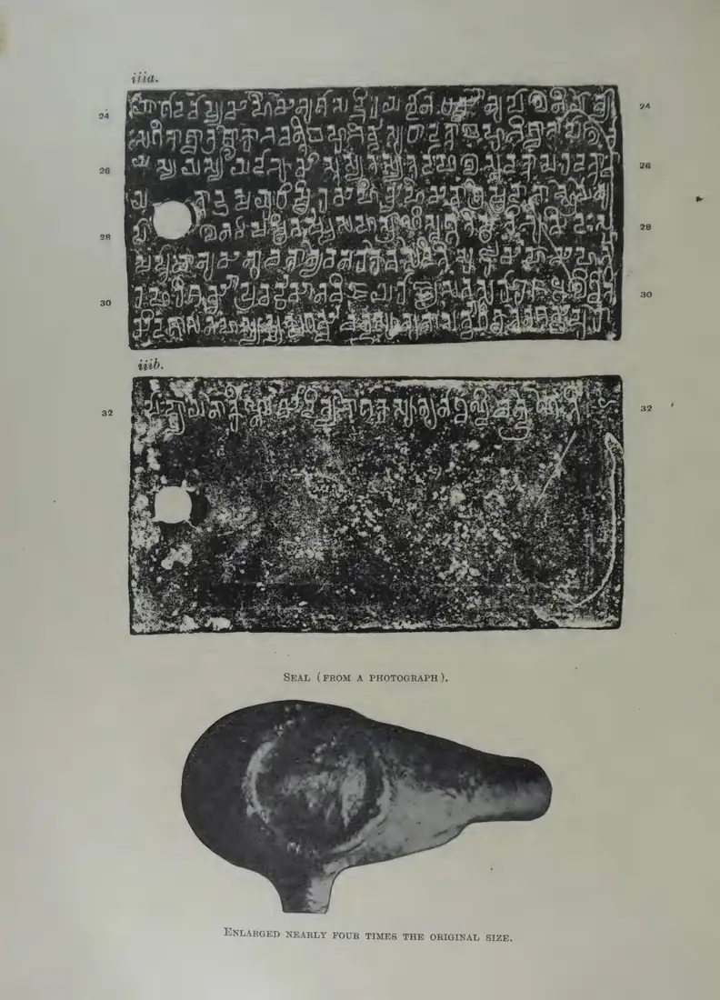

Tekkali plates of Danarnava's son Indravarman
No. 31.—TEKKALI PLATES OF DANARNAVA'S SON INDRAVARMAN.
Ink-impressions of this inscription5 were kindly made over to me by Rao Bahadur H. Krishna Sastri. The plates belong to Sri L. N. Deb, Esq., Yubraj of Tekkali in the Ganjām District of the Madras Presidency. These are “three copper-plates, each measuring about 5½” in breadth and 2¾” in height, and strung on a ring of the same metal. The first plate is inscribed only on the inner face, and the third plate bears only one line of writing on the outer face. The plates do not appear to have had raised rims. The ring is 3” in diameter and is fixed in a circular seal measuring 7/8” in diameter, on which is engraved the worn figure of a standing bull with raised hump, facing the proper left. The three plates, with ring and seal, weigh 60 tolas.”
The writing on the plates is in a state of very good preservation. The alphabet resembles that of other early grants of the Gāṅgas of Kalinga. The letters t and ṇ have the same shape as in the majority of them,6 while in one of the grants of Indravarman7 the t closely resembles the ṇ. The jihvāmūliya is employed in line 18, and the upadhmānīya five times. A final form of m occurs in line 27. The group ū is written correctly in line 10, but is expressed by ṇ in lines 3 and 31. In line 30 occur the numerical symbol 100 and the two decimal figures 5 and 4. The language of the inscription is on the whole very correct Sanskrit prose, with three verses ‘sung by Vyāsa’, quoted in lines 25-29. Line 14 contains a few Dravidian words (amba-achchi-pōṭi).
The date of this inscription (l. 30) is the year 100 54=154; i.e. the first of the three figures is expressed by the numerical symbol ‘100’, and the two remaining figures are decimals. This fresh date induced me to re-examine the year of the Chicacole plates of Dēvēndravarman, son of Guṇārnava, which I had originally read as 100 80 3.8 Kielhorn noted already that the middle figure is certainly not the numerical symbol ‘80’, but the decimal ‘8’.9 The third figure of the year does not resemble the usual form of ‘3’; but, as the date is recorded also in words, it must be meant for ‘3’. Bühler solved this little problem in a very ingenious manner by explaining
the figure '3' of these plates as an abbreviation of lōka, 'the (three) worlds'.1 Hence the year is in reality 100 83=183. The day of the same grant consists of the decimal figure '2' followed by a cipher (0)=20. If we now re-examine the date of the Purle plates of Indravarman, son of Dānārṇava,2 the year turns out to be (not 100 40 9, but) 100 37=137, and the day 20 0=20; and the year of one of the Chicacole plates of Indravarman is not 100 40 6,3 but 100 38=138, and its day is 10h (still expressed by a numerical symbol). If we go back to the other Chicacole plates of Indravarman,4 we find that both the second figure of the year and the first figure of the day are expressed by numerical symbols: 100 20 8=128, and 10 5=15. Subsequently to 100 83=183, the year of the Chicacole plates of Dēvēndravarman, son of Guṇārṇava,5 even the first figure ceases to be represented by a numerical symbol and is expressed by a decimal in 195, the year of the Siddhāntam plates of Dēvēndravarman, son of Guṇārṇava.6 The day of the same grant is 5h7 (changed unnecessarily by the editor into [८*]९):. I may be excused for having gone into such details, because this digression will in future induce editors, including myself, to be more careful and methodical in handling the dates of the Eastern Gāṅgas.
I shall now recapitulate the years of some of the earlier Gāṅga grants, at the end of which the names of certain officers are mentioned.
No. I. Urlām plates of Hastivarman, surnamed Rājasimha or Raṇabhīta (above, Vol. XVII, p. 333). Year 80 0=80, in words and figures. Written by Vinayachandra, son of Bhānuchandra.
No. II. Achyutapuram plates of Indravarman, surnamed Rājasimha (above, Vol. III, p. 129). Year 80 7=87, in words and figures. Written by the same officer.
No. III. Parlā-Kimeđi plates of Indravarman, surnamed Rājasimha (Ind. Ant., Vol. XVI, p. 134). Year 90 1=91, in words and figures. Written by the same officer.
No. IV. Chicacole plates of Indravarman (Ind. Ant., Vol. XIII, p. 121). Year 100 20 8=128, in figures alone. Engraved by Āditya-Mañchin,8 son of Vinayachandra.
No. V. Purle plates of Indravarman, son of Dānārṇava (above, Vol. XIV, p. 362). Year 100 37=137, in figures alone. Engraved by Khanđichandra, son of Āditya-Bhōgika.
No. VI. Tekkali plates of Indravarman, son of Dānārṇava (the subjoined grant). Year 100 54=154, in figures alone. Engraved by the same officer.
No. VII. Chicacole plates of Dēvēndravarman, son of Guṇārṇava (above, Vol. III, p. 133). Year 100 83=183, in words and figures. Engraved by Sarvachandra, son of Khanđichandra-Bhōgika.
From the preceding list it follows that Nos. I—III were written by Vinayachandra. No. IV was engraved by his son Āditya, Nos. V and VI by Khanđichandra, son of Āditya, and No. VII by Sarvachandra, son of Khanđichandra. In this manner, the names of these menials become an important confirmation of the correctness of the dates of their masters. Moreover, No. V was written by the Sarvādhikrīta Śāmbapurōpādhyāya, son of the Hastyadhyaksha Dharmachandra (ll. 29-31). In lines 29-32 of the subjoined grant (No. VI of the above list), the latter is stated to have been written by the same officer.
1 Indian Paleography; translated by Fleet, p. 78.
2 Above, Vol. XIV, p. 362.
3 Ind. Ant., Vol. XIII, p. 123. In column XV of the Table of Numerals in Bühler's Indian Paleography, the symbol '40' must be transferred to the line '3'.
4 Ind. Ant., Vol. XIII, p. 121.
5 Above, Vol. III, p. 133.
6 Above, Vol. XIII, p. 215.
7 Cf. 10h in the Chicacole plates of Indravarman, Ind. Ant., Vol. XIII, p. 123.
8 Like Bhōgika in Nos. V—VII, Mañchin is perhaps an equivalent of the Telugu Bhōi, 'a palānkeen-bearer; cf. above, Vol. XIII, p. 215, text line 30. Brown's English-Telugu Dictionary has the form Bōyi
The executor (ājñā) of this grant was the Mahāmahattara Hariśarman (l. 29 f.). The donee was a Brāhmaṇa named Skandaśarman (l. 17), who lived at Garakhōnna (l. 15). The royal donor was Dānārpava's son, the Kaliṅga king Indravarman of the Gāṅga family, who issued this edict from his residence of Kaliṅganagara. He seems to have made the grant for the spiritual merit of his mother Achchipōti (l. 14). The grant was made at an eclipse of the sun (l. 15) in the year 154 (of the Gāṅga era) (l. 30). It consisted of a field at the village of Tuṅgannā (l. 11) or Tuṅgana (l. 21) in the district of Rūpyavatī (l. 11).
I am unable to identify either the village granted or its boundaries (ll. 18-22). But the Rūpyavatī-vishaya (l. 11) may be connected with the [Rū]pāvarttani-vishaya1 which contained the village of Sellāda. For, according to Mr. G. Ramadas,2 this village belongs to the Tekkali Tāluk, and the subjoined grant is preserved at Tekkali.
TEXT.3
First Plate.
- 1 श्रीं4 स्वस्ति [॥*] सर्वतुं सुखरमणीयाद्विजयश्रोत्रिवासात्कलिङ्गन-
- 2 गरवासक्रान्महेन्द्राचलामलशिखरप्रतिष्ठितस्य चराचरगु-
- 3 रोस्सकलभुवननिर्माणैकसूत्रधारस्य भगवतो गोकर्ण-5
- 4 स्वामिनश्चरणकमलयुगलप्रणामाद्विगतकलिकल-
- 5 ङ्गो गाङ्गामलकुलतिलको नयविनयसम्पदामाधार[:] स्वासि-
- 6 धारापरिस्यन्दाधिगतसकलकलिङ्गाधिराज्य ×प्रविततचतुरुदधि-
- 7 सलिलतरङ्गमेखलावनितलामलयशाः6 अनेकसमर-
Second Plate ; First Side.
- 8 संघट्टविजयजनितजयशब्दप्रतापोपनतसमस्तसाम-
- 9 न्तचूडामणिप्रभामस्त्ररोपुच्चरस्त्रितचरणे ×परममा-
- 10 हैश्चरो मातापितृपादानुष्यातश्चोमद्दानार्णवसनुश्चोमान्महा-
- 11 राजेन्द्रवर्मा रूप्यवतीविषये तुङ्गनायामे सर्वसमवेतात्कुटु-
- 12 म्बिनसमाज्ञापयत्यस्ति8 विदितमस्तु वो यथास्मिन्यामे हल-
- 13 स्य भूमिब्रह्मदेयदण्डमानमिता सर्वकरभरै ×परिहृत्याच-
- 14 न्द्रार्कप्रतिष्ठाङ्गुत्वा अम्बश्चिपोटिभट्टारिकाया ×पुण्याभिवृ-
- 15 हये सूर्योपरागे सलिलपूर्वकं गरखोन्नवास्तव्याय शाण्डि-
Second Plate ; Second Side.
- 16 त्वसगोत्राय वाजसनेयसम्ब्रह्मचारिणे वेदवेदाङ्गपारगा-
- 17 य स्कन्दशर्मणे सम्प्रत्ता [!*] तदेवं विदित्वास्य स्वकीयां भूमिं भुञ्जानस्य न
1 Madras Epigraphical Report for 1919, p. 14, Appendix A, No. 6.
2 Journal of the Mythic Society, Vol. XIV, p. 271.
3 From ink-impressions supplied by Rao Bahadur Krishna Sastri.
4 Expressed by a symbol.
5 Read गोकर्ण.
6 Read °यशा.
7 Read °चरण ×प.
8 The word अस्ति is superfluous. Cf. Ind. Ant. Vol. XIII, p. 123, note 50; above, Vol. III, p. 132, note 4; Vol. XIII, p. 214, note 2.
18 केनचिदाबाधङ्कार्थः [*] सीमालिङ्गान्यप्यस्य चेवस्य प्रदक्षिणक्र-
19 मेण बोड्यानि [*] पूर्वेण विद्युद्गङ्गा [*] दक्षिणेण1 पुरुषच्छा-
20 यया पाषाणपङ्क्तिः [*] पश्चिमेन शर्करवाटकसीमान्ताः [*] उत्त-
21 रेणापि सैव विद्युद्गङ्गा [*] तुङ्गनतडाकोदकमप्ये[त*]त्वेवं काराख-
22 ण्डाः2 ब्राह्मणपलान्याश्च3 निर्गल्य प्रविशति यावत्पच्चते [*] भविष्य-
23 तश्च राज्ञ×प्रज्ञापयति [*] धर्मक्रमविक्रमाणामन्यतम-
Third Plate ; First Side.
24 योगादवाप्य महीमनुशासद्भिरयन्दानधर्मोनुपालनोयो व्या-
25 सगीताश्वाव श्लोका भवन्ति [||*] बहुभिर्व्वसुधा दत्ता बहुभिश्चानुपालिता [*]
26 यस्ययस्य यदा भूमिस्तस्यतस्य तदा फलं [|| १*] स्वदत्तां परदत्तां वा
27 यत्नाद्रक्ष युधिष्ठिर [*] महीम्महीमतां श्रेष्ठ दानाच्छेयोनु-
28 पालनम् [|| २*] ‘षष्ठिवर्षसद्द्वासाणि स्वर्गे तिष्ठति भूमिदः [*] आ-
29 क्षेमा चानुमन्ता च तान्येव नरके वसेदिति [|| ३*] आज्ञा महामहत्त-
30 रहरिशर्मा [*] प्रवर्द्धमानविजयराज्यसंवत्सरा[:*] १०० ५४ [*] लिखित-
31 मिदं शासनं हस्त्यद्ध्यक्षधर्मचन्द्रसूनना सर्वाधिकृतेन श[*]स्वपुरो-5
Third Plate ; Second Side.
ABRIDGED TRANSLATION.
(Lines 1-12.) From the residence of Kaliṅganagara (l. 1 f.), the worshipper of the god Gōkarṇa-svāmin (l. 3 f.) on the Mahēndra mountain (l. 2), the ornament of the spotless family of the Gāṅgas (l. 5), who has obtained the sovereignty over the whole of Kaliṅga (l. 6), the fervent devotee of Mahēsvara, who meditates on the feet of (his) mother and father, the son of the glorious Dānārṇava, the glorious Mahārāja Indravarman, commands (as follows) the ryots, accompanied by all (others), at the village of Tuṅgannā in the Rūpyavatī district (vishaya) (ll. 9-12).
(Ll. 12-17.) “Be it known to you that (one) plough (hala) of land in this village, measured by the rod (used for) brahmadēyas, exempting (it) from the burden of all taxes, making (it) to last as long as the moon and the sun, has been granted, for the increase of the spiritual merit of (my) mother, the lady Achchipōti,8 at an eclipse of the sun, with previous (libations of) water, to Skandaśarman, who resides at Garakhonna (and) belongs to the gōtra of the Śāṇḍilyas, a student of the Vājasanēya (charaṇa), who has mastered the Vēdas and Vēdāṅgas.”
1 Read दक्षिणेन.
2 Read ‘खण्ड्या.
3 Read perhaps ‘पालन्याश्च.
4 Read षष्टिं वर्षे.
5 See above, Vol. XIV, p. 362, text line 30.
6 Read ‘कीर्णमादित्यभोगिक’.
7 This line ends with a punctuation.
8 amha (—Sānskrit ambā) in Telugu means ‘a mother’, achchi in Kanarese the same, and bōti according to own’s Telugu-English Dictionary ‘a damsel’.
Plate 1 is bound after this page.
Plate 2 is bound after this page.
(Ll. 18-22.) “And the marks of the boundaries of this field are to be known in the order from right to left. To the east, the Vidyudgaṅgā. To the south, a row of boulders for (a distance which equals) the shadow of a man.1 To the west, the boundaries of Śarkaravāṭaka. And to the north, the same Vidyudgaṅgā. And the water of the tank (taṭāka) of Tuṅgana,2 flowing out of the Kārākhandī and Brāhmaṇapālanī (canals ?), enters this field until (the crop) ripens.”
[Ll. 24-28 contain three verses 'sung by Vyāsa'.]
(Ll. 29-31.) “The executor (ājñā) (was) the Mahāmahattara Hariśarman. 100 (and) 54 years of the kingdom of increasing victory (had then passed). This edict (śāsana) (was) written by the Sarvādhikrita Ś[ā]mbapurōpādhyāya, the son of the Hastyadhyaksha Dharmachandra, (and) engraved by Khaṇdichandra, son of Āditya-Bhōg[i]ka.”
1 Cf. above, Vol. III, p. 134, note 1, and Vol. XIV, p. 363, passim.
2 This name was spelled Tuṅgannā in line 11.

